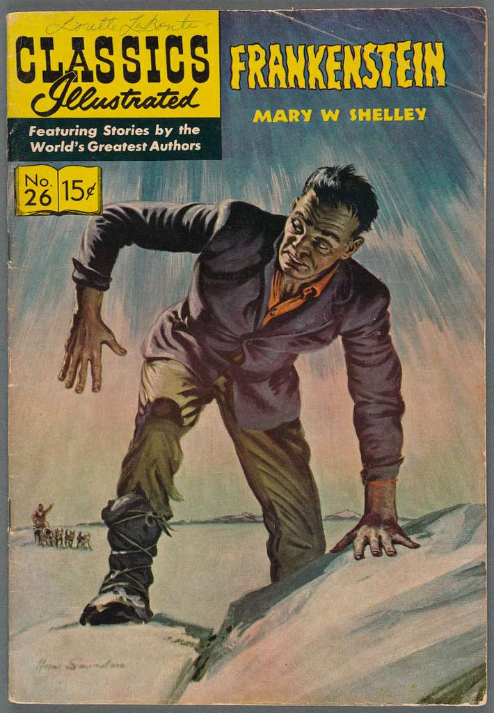
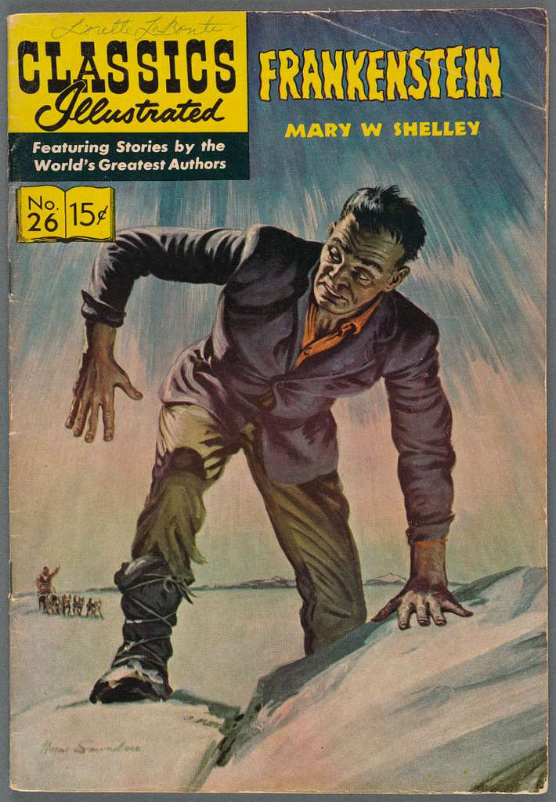

Music
My taste in music is centered in rock, I love the sound of the guitar which is actually my favorite musical instrument. I prefer electric guitar more than the acoustic one, it has many possibilities of sound, so we can play many genres. I have three main genres for music and in terms of sonority they are not far from each other and even complementary. The first one is “Dreampop”, it is basically an ambient version of soft rock with the use of reverb and echo in the vocal, dreamy guitar riffs and slow-paced drums (mostly with a drum machine). The second one is “Shoegaze”, it is like dreampop, but the reverb and echo are stronger and the guitar riffs heavier. The third one is “Indie rock”, it is like alternative rock but with nostalgic vibes and focus on the clean guitar riffs. There is a band that I consider as the best of all, “Cocteau Twins”. They are one of the pioneers of dreampop, composed by Elisabeth Fraser on vocal, Robin Guthrie on guitar and Simon Raymonde on Bass. Their music is known for the extraordinary vocal performance of Frazer using ethereal angelic voice with lyrics composed by a random combination of word from different languages. They are for me the representation of music itself.
Book
My taste in book is centered in gothic literature, especially from the 19th century, I love the way that the writers use poetic expression mixed with old English writing style. My favorite book is “Frankenstein or the modern Prometheus” By Marry Shelley. This book tells the story of a scientist who discovered the secret of life and use this latter to reanimate a creature composed with part of dead bodies. I love the way the author tells the story of the monster and its creature in an unusual way.
Movie
My taste of movie is centered around romance science fiction and psycho-philosophy, with all three combined. What I like with this genre is that it is thought-provoking, after watching you are pondering about the sense and the message of what the producer want to convey. One movie that I consider as my favorite is “Mr. Nobody”. It tells the story of a little boy who is forced to choose between going to live with either his mother or his father who got divorced. But the little boy has an ability to see different possibilities of the future, so the movie basically shows the possibilities of the future life of the boy depending on the choice he makes.
 
